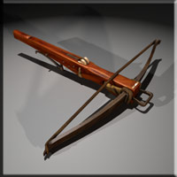
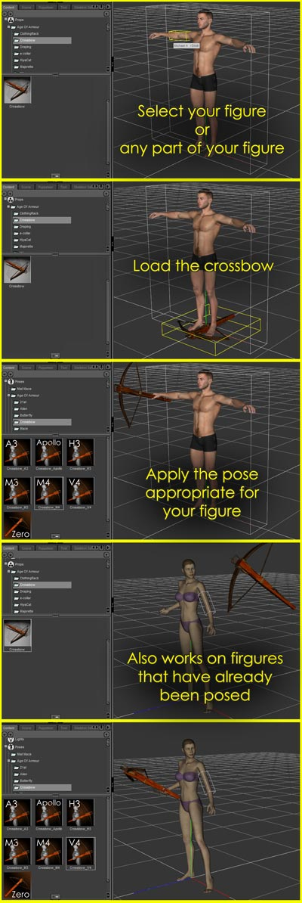

|  |
| Crossbow Prop V 1.0 |
| Description |
|
This zip file
contains 1 crossbow smart prop with parented bolt prop for Daz|Studio,
Carrara and Poser. The files use external geometry in wavefront object
format so the model should be able to be loaded in most any 3d program
though it will be lacking morphs. The morphs are self contained within
the .pp2 file.
Textures, bump maps and UV templates are also included. They are moderately high rez so they should be suitable for close ups. I intend to make a few different texture sets and some D|S specific material settings for this model in the future. The current settings are intended for Poser 5+ so, for now, D|S users may need to adjust the advanced material settings for better results... In particular the specularity and bump levels. |
| Installation instructions |
|
All folders
contained in this zip archive should contain correct folders to mimic
Poser mapped directories. Extract the zip archive to a Poser mapped
directory (usually C:\Program Files\e frontier\poser7)
Daz|Studio users
should unzip to the content directory ( Usually C:\Program
Files\Daz\Studio\content).
These items were
tested in Daz|Studio 1.7 - 2.2, Poser7 and Carrara6 but
should work in some earlier versions as well.
|
| Usage |
|
I know that it can
sometimes be a real pain to adjust and properly place things like swords,
guns etc. into the hands of figures in a scene so I have included prop
poses to scale the crossbow and move it to the right hand of several
popular human 3d figures including Micheal 4, Micheal 3, Victoria 4,
Aiko 3, Hiro 3 and Apollo Maximus. The poses aren't perfect and some
fine tuning will undoubtedly be needed but they should help get the
prop in the ball park. Because the crossbow loads parented, but in a confusing location, I have included a few to describe how I designed the loading and posing of the crossbow. This should work essentially the same in Poser, Daz|Studio or Carrara 6. |
| Legal |
Feel
Free to use these files for all renders private or commercial. No
attribution is needed or expected. The texture templates contained in
this archive may be modified and redistributed freely or sold. The
making and distribution of texture/material packs for these 3d models
is encouraged. The .obj and .pp2 files containing the geometry may not
be re-distributed without prior permission from William Hurt. While I can't see how any of these files could possibly cause any damage to a computer we all know there is no way to predict every eventuality when dealing with software so I assume no responsibility for the use/misuse of these files. Oh, and as every other software disclaimer says... Don't use this software to run life support computers LOL! All files are copyright 2008 William Hurt but, as stated above, any of the texture maps or shaders in this zip archive may be modified and re-distributed. Please consider the texture maps/templates and D|S shaders in this zip archive as Public Domain. If you get rich off of it somehow feel free to buy me a beer :) Happy Rendering |